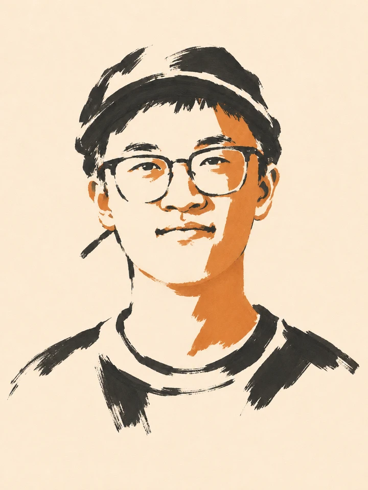

Yuhan Chen
I study cell identity and tissue niches through spatial omics.
Undergraduate Researcher
Global Institute of Future Technology (GIFT), Shanghai Jiao Tong University
Hongyi Xin’s Group

Research in focus
What changes with a cell’s niche?
Which molecular features stay stable within a cell type, and which shift across niches?
- Cell identity
Compare molecular profiles of the same cell type across niches.
- Functional niches
Map overlapping gene programs without forcing each location into a single domain.

Publications
Publication detailsBenchmarking niche identification via domain segmentation for spatial transcriptomics data
Selected research
All research
Benchmarking spatial niche identification
When does a spatial domain recover a functional niche?

NicheRadar
Overlapping gene programs reveal tissue organization.
Cell-State Differences Across Tissue Environments
How do cells of the same type vary across niches?
A separate interest
Quantitative conservation

Vessel-strike risk and conservation policy for Rice's whales
Combining vessel trajectories and relative risk models to evaluate conservation benefits, policy coverage, and voyage delay.
Explore project: Rice's whale conservation